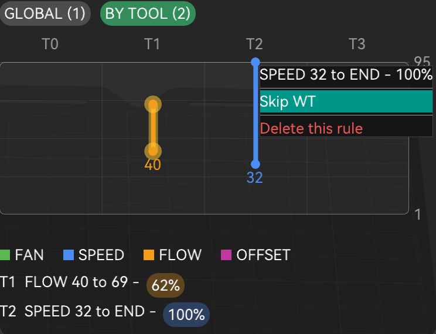

§15 · §18 · §19 — Output
G-code & finishing
Three unrelated things that did not deserve pages of their own: a G-code post-processor you edit as a chart, real kerning for embossed text, and one number that decides whether a bridge starts anchored or starts hanging.
Expert G-code Reprocessor
- Libre Mode
- edits real G-code
- print-verified
- 2.3.8
Where Preview›the view-type dropdown›Gcode Reprocessor
It lives in the same dropdown as RealColor and renders inside the same legend panel as every other view mode, with no separate floating window. A master Reprocessor enabled checkbox gates the whole thing: with it off, none of your rules do anything however many you have.

A GLOBAL / BY TOOL toggle switches the chart between rules that apply everywhere and
rules scoped to one tool. Each tool gets its own column, T0, T1,
T2 and so on, zero-based to match the real T<n> G-code command.
The rules
| Rule | Emits | Range |
|---|---|---|
| Speed override | M220 S<n> | 1–300% |
| Flow override 2.3.8 | M221 S<n> | 20–200% |
| Fan override | M106 S<n> | 0–255, raw PWM rather than percent |
| Z-offset 2.3.8 | SET_GCODE_OFFSET Z=<v> | ±0.3 mm in 0.01 steps |
By-tool Z-offset rules restore right before a toolchange and re-apply right after, timed around the physical tool swap on purpose. Global rules affect the whole ranged layers; by-tool rules only affect that range while the picked tool is actually active, reverting automatically when the print switches away and re-applying when it comes back, all without touching the wipe tower's own toolchange G-code. Mode is per rule, so a global fan rule and a by-tool speed rule can both be live at once. There is no Apply button: every edit saves immediately.
The chart is the only editor
- Right-click empty space in the chart to add a rule at that layer, and in BY TOOL view at that tool. A small colour-coded menu offers the four types.
- Drag either endpoint of a rule's bar to change its layer range. Dragging the top endpoint all the way up snaps it to "to the end of the file".
- Click a rule's coloured value badge in the text summary below the chart to type its exact number: percent for speed and flow, raw PWM for fan, mm for Z-offset.
- Right-click an existing point for Skip WT / Don't Skip WT and Delete this rule.
A rule whose layer range no longer exists, because the object got shorter after the rule was created, shows its dot pinned to the chart's edge in grey rather than disappearing off-screen. Still fully draggable and deletable from there.
Avoid Wipetower
Any rule can independently opt out of applying inside wipe tower G-code, shown as a permanent gold glow on its chart bar. On machines where the wipe tower fires between layers for drip control rather than only at toolchanges, a rule's range can otherwise land inside that purge G-code rather than only "real" printing. This excludes every wipe-tower segment from the rule's active range, splitting the range around a purge that falls in the middle rather than skipping the whole thing.
A real multi-tool print ran clean with by-tool speed, flow, fan and Z-offset rules active, and the exported G-code was checked afterwards line by line. Avoid Wipetower was separately verified against an exported file to confirm a rule with it enabled never touches wipe-tower purge G-code.
Fixed in 2.3.7 alongside the original version of this panel: Snapmaker U1 / Klipper toolchanges
were forcing M220 S100 on every colour change, wiping any manual speed override,
and emitting M220 B and M220 R. Both were leftovers from older
Marlin-based Snapmaker machines and meaningless on the U1's Klipper firmware. Both are gone,
so toolchange G-code is simpler and no longer fights a manual speed setting.

Typographic Spacing
- no gate
- pure opt-in
- 2.3.9
Where Left gizmo toolbar›Text (Emboss)›Advanced›Font kerning
Stock Orca does not compose text, it drops glyphs: every letter is placed at a fixed advance and that is the whole of it. The Char gap control it offers is tracking, one shift applied identically between every pair of characters. That is not kerning.
Kerning is the correction the type designer built into the font for
specific pairs, so that AV, To or Wa close the
diagonal gap that plain advances leave gaping. Orca never read it.
Tick Font kerning and the embossed text uses the kerning pairs stored in the font. Char gap is unchanged and the two are independent: tracking shifts everything uniformly, kerning fixes individual pairs. The setting is stored per style in the project. With it off, embossed text is identical to what earlier versions produced.
When the checkbox is greyed out
Not every font ships kerning data. When the selected font carries none, the checkbox is disabled and labelled "Font has no kerning data" rather than silently doing nothing. Typical fonts without it: monospaced faces (Courier, Andale Mono, SF Mono), symbol and Braille fonts, CJK fallbacks, and a number of display faces (Copperplate, Big Caslon, Bodoni 72). Across a typical macOS library of about 900 styles, roughly three quarters do carry usable kerning.
A fix specific to this fork
The font library Orca is built on reads the Microsoft kern table and OpenType
GPOS, but silently ignores the Apple kern version 1.0 table.
That is precisely the format the macOS system fonts use, Helvetica included. Without a fix,
Font kerning would appear to work for some fonts and do nothing at all for others, with no
explanation. This fork adds a reader for the Apple format, so both layouts work.
A handful of fonts use Apple's state-machine kerning subtables, formats 2 and 3 (Geeza Pro, Apple Chancery). Those are still reported as having no usable kerning data.
Font search actually filters now
Unrelated to kerning but in the same gizmo. Typing in the font selector used to make the entire list disappear instead of narrowing it. The search was implemented correctly, but the cached font list, which is what you get from your second launch onward, populated only the names drawn on screen and left the list the search matches against empty. So any keystroke matched zero fonts, and only a first launch on a clean profile ever worked. Fixed. The bug is present in upstream Orca as well.
Under the hood: the glyph advance used to be baked into the shape cache, which is keyed by
character alone, so a per-pair value could not be expressed at any price. Text
composition now happens in one place, Emboss::layout_text(), which future
typographic controls (manual pair kerning, baseline shift, per-range scaling) will hook into.
Bridging infill extra expansion
- no gate
- additive, zero at default
- 2.4.0
Where Quality›Bridging›Bridging infill extra expansion
Orca already grows each bridge region a little into the area around it, so the strand has
somewhere to land instead of starting in mid-air. Two things are wrong with how it does that:
the amount is hard-wired, and it is derived from your wall count. Raise
wall_loops for stiffness and you silently change the anchoring of every bridge in
the part. This setting adds millimetres on top of the automatic amount and decouples the two.
What it buys you: the bridge takes over the neighbouring region of the same part, so the nozzle is already extruding over solid, supported material before it reaches open air. A strand that starts anchored behaves very differently from one that starts unattached. Each pass has something to grab, and the filament tensions across the gap instead of simply hanging.

Turning it up until the bridge claims the entire surrounding region is a normal way to use this. It removes the seam artefact where the bridged area meets the supported one, and gives the layer a single continuous direction. Values in the hundreds are accepted.
- Additive. At 0 the slicer behaves exactly as before.
- Applies to external bridges only.
- The custom bridge angle is honoured across the expanded region.
- The expansion grows into solid infill, sparse infill, top surfaces and supported bottom surfaces. That last one is the important case: a beam resting on two blocks has its bridge sitting right next to the supported area, and that supported area is the best possible landing ground.
- It costs a little extra material, and some bridge-speed travel over a region that was already solid.
Debugging: ORCA_DEBUG_BOTTOM=1 writes BRIDGE_EXPAND and
BRIDGE_EXPAND_DONE lines to /tmp/neotko_bottom.log, one pair per
layer containing a bridge. extra_cfg is the value that reached the engine, so if
that reads 0 when you set something else the problem is config invalidation rather than the
expansion. zone_*_mm2 tells you how much of each kind of neighbour actually exists
next to the bridge; all zeros means there is nowhere to grow, which is the usual reason for
"it does nothing".